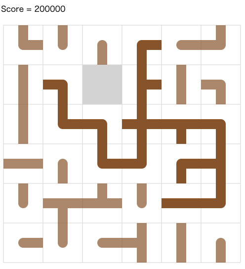

AtCoder Heuristic Contest 011¶

問題概要¶
- N * Nのn-puzzle(slide puzzle)が与えられる
- 各タイルには上下左右方向への線があったりなかったりする絵が描かれている
- Tターン以内にできるだけ大きな木になるようにタイルを動かせ
- ただし、全域木ができる場合はターン数、できない場合は木の大きさに基づいてスコアを計算する
時間¶
199時間
個人的メモ¶
- 全域木をどうやって探すか、大きなn-puzzleをどうやって解くか、が難しい問題
- ざっくり「目標の全域木を探すパート」と「目標の全域木になるようにn-puzzleを解くパート」で考えるのが基本方針だった模様
- 全域木ができないと50%点しか取れないが、早い段階で平均が50%以上の解が提出されていたので、全域木前提の方針を選びやすかった
- 同時(交互？)にやるのも可能な模様
1. 目標の全域木を探すパート¶
- n-puzzleは、作れる状態が n!/2 あり、今回の絵柄の重複を考慮してもかなりの状態数がありえる
- nは35～99とかなり大きい
- ただ、visualizer(seed=0)の画像が公開されていたが、全域木になるような配置は複数存在しており、それをどれだけ効率的に探せるかが問題
- できれば、初期配置から近い配置を探したい
1-1. 全域木を作って、タイル集合が一致するのを目指す焼きなまし¶
- 各タイルの中心を頂点として、絵柄は無視していろんな全域木を作り、タイル集合が一致するのを目指す焼きなまし
- 全域木は、1辺をつないでサイクルをdfsで探し、その中から1辺を削除すると、別の全域木が作れる
- invalidな状態を許容する焼きなまし
- 評価関数は、タイルの個数の差の2乗の和、など
- かなり多くの全域木が得られるようで、良い解を複数次のn-puzzleを解くパートに持っていける
1-2. 2タイルswapする焼きなまし¶
- n-puzzleが解けるかどうかは、置換のパリティで判断できる
- 今回の場合、初期配置から偶数回2つのタイルを交換する場合(互換)は移動可能な配置になる
- なので、これを近傍に全域木ができるまで山登り・焼きなましができる
- 局所解にハマりやすいのと、他の全域木解とは離れているので、多点スタート、探索回数制限でやり直し、kickなどが必要
- 山登りの場合は、初期状態に依存しやすい問題もある
- また、Nが大きい(9,10)と結構探索回数が必要でしんどい(1個～数個、うまくやって数十個程度？しか見つけられない)
- ただ、上位陣でもこちらの方針で見つけている模様
- 制約から焼きなまし時の「悪い状態を除く」ができる
- 評価関数は、単純に「一番大きな木の大きさ」だとイマイチで、一番大きな木じゃない部分も評価に含めた「連結成分の個数＋元盤面との近さ」や「各木(連結成分)のサイズの2乗などの和」などが有効だった模様
- https://simanman.hatenablog.com/entry/2022/06/06/210815
- https://twitter.com/milanis48663220/status/1533469249460506624
- https://twitter.com/terry_u16/status/1533469619134300161
- https://github.com/FakePsyho/cpcontests/blob/master/atcoder/ahc011/approach.md
- https://twitter.com/takumi152/status/1533419046213124096
1-3. 枝刈りDFS/BFS¶
- 「タイルの外側に向かって線は出ない」「閉路になってはいけない」など枝刈りが可能
- 連結性で枝刈り
- https://assy.hatenablog.jp/entry/2022/06/07/200218
- 葉タイルは他のタイルがおけない場合のみ置く
- https://twitter.com/hitoare1/status/1533389195087347712
- https://kens-kyopro.hatenablog.com/entry/2022/06/06/233148
- https://twitter.com/G4NP0N_kyopro/status/1533396276166787073
- 線の制約、閉路制約、葉の数の制約
- タイルIDの大きいタイルから順に枝を狩りながらタイルをDFSで決めていく
- https://twitter.com/yupiteru_kun/status/1533847449671897088
- 腕の多いやつを始めの方にきやすくする
- https://assy.hatenablog.jp/entry/2022/06/07/200218
- 試すマスを2個に制限？
- 全域木DD(Dicision Diagram?)フロンティア法に似た方法で高速化
- 端側はランダム生成、残りの部分をDFS
- 残りタイルや初期位置からの距離で重み付けランダムに選択
- 行ごとに見る
- 探索順を工夫
- 縦の辺数、横の辺数を条件
- 各マスで、線の必要数/制限数を持って、その情報からの制限で枝刈り
- ランダム性をいれないと結構特徴的な形の全域木が生成される
- ビームサーチでも
1-4. 部分領域を全列挙で山登り¶
- サイズが6の領域にわけて配置を全列挙、組み合わせを山登り
2. タイルのマッチング¶
- 普通のn-puzzleとは異なり、同じ絵柄が存在して、置換のパリティが一致すれば交換可能
- できるだけ初期状態に近いと移動距離が少なくて嬉しいので、初期状態と目標状態の各タイルのマッチングを考えられる
- コストをマンハッタン距離・ユークリッド距離としたマッチング問題を最小費用流やハンガリアン法で解けばよい
- (自分は、この後のn-puzzleが順番に置いていく方法だったので、greedyに一番近いタイルを割り当てる方法にした、、、)
- 絵柄は15種類しかないので、(n * m - 1)サイズが15より大きい場合は必ず重複するタイルが存在する
- 二部マッチングの差分更新も可能
3. n-puzzleを解くパート¶
3-1. パターンを決めて順番に埋めていく¶
- 上の行、左の列、を順番に埋めるような埋め方だと、それぞれ埋めた後はN-1サイズの問題になる
- Fringe method
- 大きいNの場合などこれで小さい問題にしてから解くことができる
- 行(または列)を1行ずつ外側から埋めて、最後の2行は2つずつ左から埋める
- LBL method
- 実際のタイルの移動は目的位置への移動パターンをBFSやA*などで探す
- 車庫入れ
- 行を埋めるとき、残り2マスは同時に考えないといけない
- しかし、実際にその動きを実装しようとすると、ハマるパターンが出てしまう
- 回避の動きを埋め込んでもいいが、無駄にターン数がかかってしまう
- 端から逆の端に移動するようなパターンは無駄な移動があるので、うねうねさせたり、回転や鏡像などを試すのがよい
- サイズが小さくなったら最短解を探すなどもできる
- パターンで埋める場合は、初期状態から目標状態の近さが結構重要
3-2. 枝刈りBFS、A*、IDA*、両側BFS¶
- 最短手順を求める
- ただ、大きいサイズは無理なので、局所的だったり、終盤のサイズが小さくなったりときに適用
- 2マスずつとかなら、結構高速に見つけられるのでこれを繰り返す
3-3. ビームサーチ、chokudaiサーチ¶
- https://twitter.com/colun/status/576752592350363648
- 評価関数は、「マンハッタン距離」だけだとイマイチで、他のヒューリスティクスとの組み合わせや、ユークリッド距離の1.5乗や2乗したものなどを使うのが有効だった模様
- マンハッタン距離だけだとハマり状態とかで詰みやすいので、うまく避けられるように評価関数にヒューリスティクスを加える
- Linear Conflict(同じ行に、その行に配置されるタイルがswapして存在したら、すれ違いするために+2は必要)
- mismatch cost(離れたところで揃ってないマスが存在していることにコスト)
- https://computerpuzzle.net/puzzle/15puzzle/index.html
- https://medium.com/swlh/looking-into-k-puzzle-heuristics-6189318eaca2
- 距離を累乗したものを使う意味
- 空マス位置で区別して多様性確保
その他¶
- フロンティア法
- Zobrist Hashの半分の値をkey,value
- undo可能UnionFindで連結性管理
- パターンデータベース
文献¶
- Ian Parberry, A Real-Time Algorithm for the (n^2-1)-puzzle, Inf. Proc. Lett., 1995
- Ian Parberry, Solving the (n^2-1)-puzzle with 8/3 n^3 expected moves, algorithms, 2015
visualizer¶
- 罫線文字
- https://twitter.com/terry_u16/status/1533389785569513472
- https://twitter.com/contramundum2/status/1533399734844395520
- https://kiri8128.hatenablog.com/entry/2022/06/05/211624
- https://twitter.com/sumoooru/status/1533396347667501056
- https://hackmd.io/@tRy4BmqEQNynaezZyF9K5g/BJX3o19_c
- 単方向のがないかなと思ったけどUnicodeの表を見るとあった
- または、矢印で代用する、マスを倍化する、など
- richモード
- ランダムノイズが入って同じ種類のタイルの区別が可能だった
- パズル自作
- https://twitter.com/zach_leee/status/1533391262694637568
- https://twitter.com/k_nasuo_p/status/1533479266591346688
- https://twitter.com/iwashi31/status/1533398694824796160
- https://kaede2020.hatenablog.com/entry/2022/06/05/190049
- https://twitter.com/phyllo/status/1533399127782232064
- 自分で動かして手数を考えてみるときにメモ帳上で書いたりだとしんどいので作った
- けどそこまで役には立たなかった、、、
- visualizerお絵かき
類似の問題¶
- https://twitter.com/terry_u16/status/1533388894812573697
- https://twitter.com/Yu_212_MC/status/1533389557995290625
- https://twitter.com/inani_waon/status/1533430346515001344
- https://inaniwa.hatenablog.com/entry/2022/06/06/180523
グローバル化¶
- 今回は海外の強い勢が多く参加していた
解説¶
(100位まで&発言を見つけられた方のみ)
- simanさん
- yokozuna57さん
- mtsdさん
- tomerunさん
- saharanさん
- shibh308さん
- Psyhoさん
- terry_u16さん
- kawateaさん
- komori3さん
- noimiさん
- iwashi31さん
- https://twitter.com/iwashi31/status/1533389785620189186
- https://twitter.com/iwashi31/status/1533392202734641152
- https://twitter.com/iwashi31/status/1533394724664799232
- https://twitter.com/iwashi31/status/1533396648642367489
- https://twitter.com/iwashi31/status/1533398694824796160
- https://twitter.com/iwashi31/status/1533437718570553344
- assyさん
- primenumberさん
- fky_さん
- yosssさん
- eijirouさん
- Yu_212さん
- fuppy0716さん
- hamamuさん
- yunixさん
- highjumpさん
- hitoareさん
- eivourさん
- pesさん
- takumi152さん
- mamekinさん
- riantkbさん
- maspyさん
- nasuoさん
- https://twitter.com/k_nasuo_p/status/1533390998206033921
- https://twitter.com/k_nasuo_p/status/1533391423558815745
- https://twitter.com/k_nasuo_p/status/1533392254836314113
- https://twitter.com/k_nasuo_p/status/1533395304871247873
- https://twitter.com/k_nasuo_p/status/1533388475273461760
- https://twitter.com/k_nasuo_p/status/1533388693318545409
- hoshi524さん
- wanuiさん
- mikuさん
- penguin46さん
- plcherrimさん
- kensさん
- olpheさん
- NKTさん
- https://twitter.com/inani_waon/status/1533389772651044865
- https://twitter.com/inani_waon/status/1533390723189338112
- https://twitter.com/inani_waon/status/1533393562842238976
- https://twitter.com/inani_waon/status/1533394868696797184
- https://twitter.com/inani_waon/status/1533396129760522240
- https://twitter.com/inani_waon/status/1533398976812023809
- https://twitter.com/inani_waon/status/1533400023299330048
- https://twitter.com/inani_waon/status/1533413823347970048
- https://twitter.com/inani_waon/status/1533418247520804864
- https://twitter.com/inani_waon/status/1533419457653002241
- https://twitter.com/inani_waon/status/1533427079991001093
- https://twitter.com/inani_waon/status/1533429548951293952
- https://inaniwa.hatenablog.com/entry/2022/06/06/180523
- merhornさん
- nnnSMMさん
- shotoyooさん
- Kiri8128さん
- nrvftさん
- ebicochinealさん
- kozimaさん
- yochanさん
- hari64さん
- m_mさん
- theory_and_meさん
- https://twitter.com/theory_and_me/status/1533400321489530880
- https://twitter.com/theory_and_me/status/1533391392499593217
- https://twitter.com/theory_and_me/status/1533392693732442114
- https://twitter.com/theory_and_me/status/1533395802902900736
- https://twitter.com/theory_and_me/status/1533396186622996481
- yamatsuxさん
- wattaiheiさん
- ponjuiceさん
- takytankさん
- petit_sophiaさん
- starpentagonさん
- kusanoさん
- YamagenSakamさん
- yupiteruさん
- KoDさん
- sumoooruさん
- US_cubeさん
- ssaattooさん